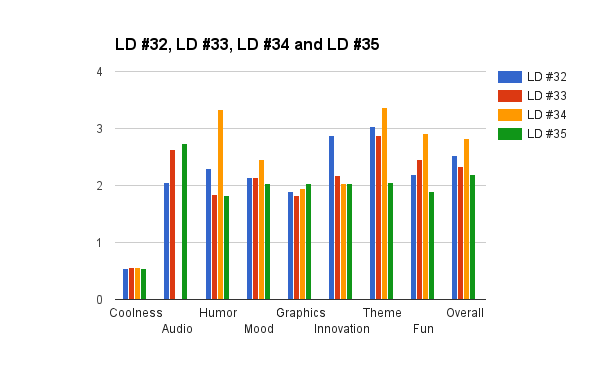

Sexta-feira às 22h (horário de Brasilia) começa o Ludum Dare #36, e será minha quinta participação nesta game jam.
Semana passada realizei uma palestra na USP sobre game jams e dei muitas dicas importantes para participar deste tipo de competição, principalmente no Ludum Dare que tempo mais experiência. Confira os slides da apresentação aqui, tem muito conteúdo útil se você também pretende participar.
Abaixo estão algumas coisas que vou fazer nesta edição do Ludum Dare, separando pelas que eu recomendo e as que eu não recomendo (a não se que tenha experiência).
Não recomendo, mas vou fazer
Em 3 edições do Ludum Dare usei a Unity, e na última a Defold (que foi um grande desafio por não conhecer). Desta fez quero usar algo que conheço mas não uso há um bom tempo, a Cocos2d-x, um framework para desenvolver jogos em C/C++.
Focar em game design. Na minha apresentação é possível ver o gráfico abaixo que mostra que a qualidade dos meus jogos aumentou, porém o game design diminuiu. Desta vez este será o principal foco.

Tentar fazer arte e som para o jogo. Na última edição consegui fazer uma arte bem legal, vou tentar repetir o feito nesta.
Para aproveitar melhor o tempo vou tentar não dormir no primeiro ou no segundo dia. Sempre tento, mas acabo dormindo, vamos ver se desta vez consigo.
Sempre fiz os jogos do Ludum Dare pensando na plataforma Web, pois é mais fácil para colocar o jogo lá e testar. Desta vez quero que o foco seja mobile, então minha prioridade será Android.
Dicas importantes
Escolha a linguagem de programação, framework ou game engine antes de começar e tenha certeza de que tudo está atualizado para não perder tempo esperando downloads.
Vai ser necessário criar arte e som, então já se prepare antecipadamente para isso (mesmo que você ache que não vai dar tempo, se prepare pois vai que dá).
Se você tem dificuldade em se concentrar, não deixe a TV ligada e evite YouTube, tente ouvir trilha sonoras ou músicas que você gosta.
Parece bobo mas planeja como serão suas refeições, e tente não sair pra comer pois isso pode te custar um tempo precioso.
Planeje o que fazer em caso de falta de internet e/ou falta de energia elétrica, é sempre bom ter um plano B e um lugar pra ir (algo tipo Starbucks, por exemplo).
Links interessantes:
Minha participação no Ludum Dare #32
Minha participação no Ludum Dare #33